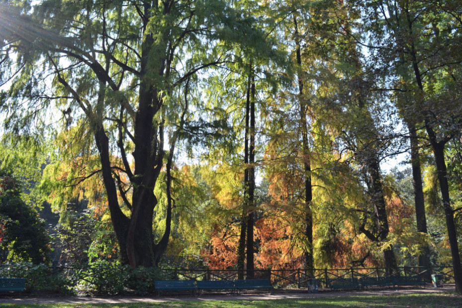
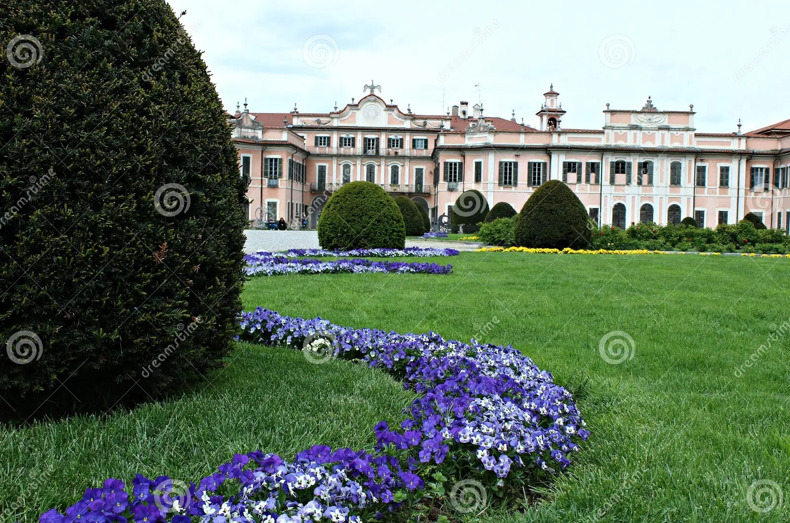
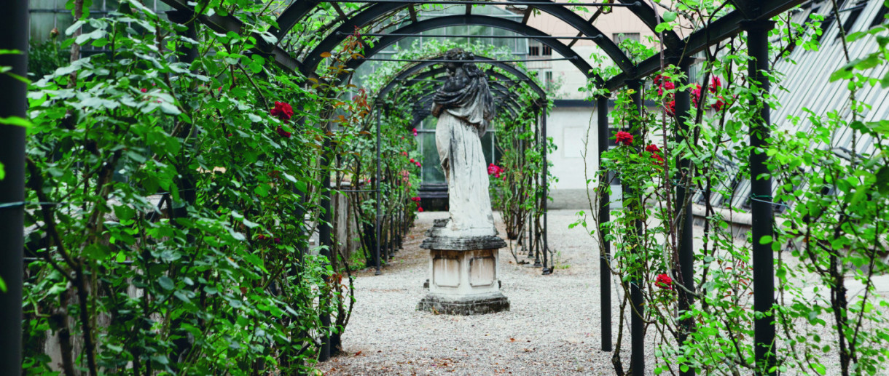
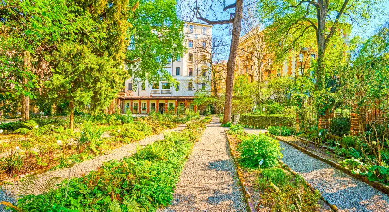
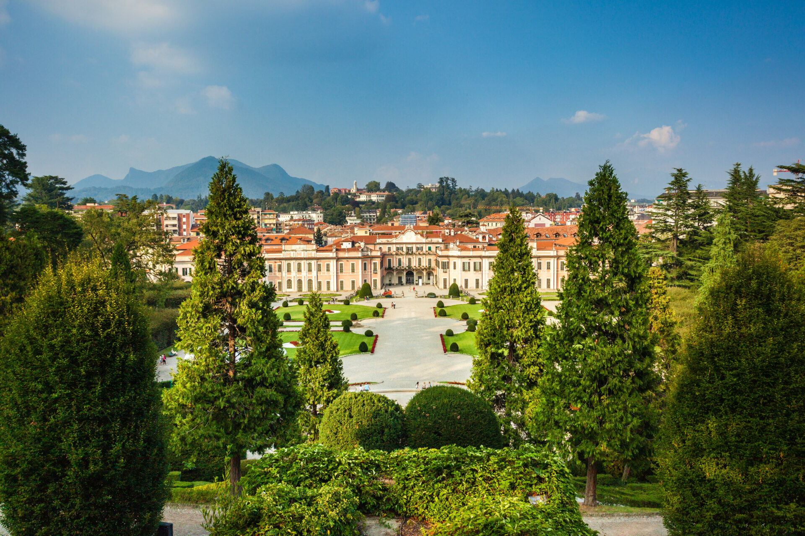

Lombardian Garden Design
The region of Lombardy is unique with terrace gardens, olive trees, layers of landscapes with gravel paths, sculputes surrounded by flowering plants with Mediterranean architecture. The rich history and closeness with the natural environment in this vast region give the impression of endless options for garden lovers visit, and find inspiration.
Bald Cypresses of the Montanelli Gardens

Taxodium distichum, the Bald Cypress have a 2.3 m diameter and are 25 m tall, the largest tree in Lombardy. The Gardens covers 172 sq m and were completed in 1784, with additions of a Planetarium and Museum of Natural Sciences to the park.
Vedano al Lambro

Vedano al Lambro is a small village overlooking the Park of Monza. With centuries old trees, terraces' and Villa Mirabello built in the late 18th century.
Cascina Rosa Botanical Gardens
Over a kilometer of paths outline lawns and flower beds of; Azaleas, camellias, pines, oaks, willows flourish in the gardens. Greenhouses cultivate of 1500 plants.
Botanical Gardens of Pavia

Founded in the XVII century, the park hosts a Arboretum, rose orchards and tropical flora. The parterre quad has a formal style with trees planted throughout the property that is nestled by the Ticino River.
Royal Gardens of Monza

Monza is one of the largest historical parks in Europe thats entirely enclosed by walls. The formal garden, Villa Reale, and agricultural plots, a pond, grotta, temple, with a geometric layout of the park.
Gardens of Como

Villa Carlotta is one example of an exceptional Botanical Garden and surroudning 20 acres of park on the shores of Como. An English style romantic garden of the late 19th century.
Gardens Milan

Brera Bontanical Garden, Cascina Rosa, Lake Maggiore and Guastella Garden are all perfect escapes in a culturally immersive region.
Varese - The Garden Province

The site originates to the 16th century, with a range of uses that have developed over time. In the 18th century, Palazzo Estense remains symbolic with its characteristic fountain; 'Swan' Lake, geometric flowerbeds, French style gardens. The garden city displays terraces, manicured gardens and archaeological features throughout the villas, cobblestone roads, cafes, courtyards and monuments.